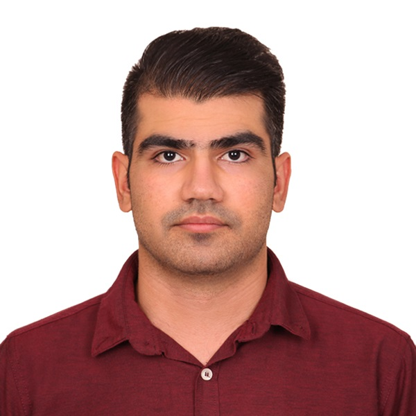

Mohammad Oveisi
Ph.D. Candidate, UC Irvine · RF, Analog, and Mixed-Signal IC Design
I design integrated circuits for high-speed wireless links, from system-level budgets through transistor-level design, tape-out, and silicon measurement.
PLLs and CDRs · mm-Wave / THz Transceivers · Frequency Synthesis

- 8peer-reviewed IEEE papers, first author on 4
- 2024IEEE TCAS Darlington Best Paper Award
- 4summer internships at Qualcomm Technologies
- 2pending U.S. patent applications
- 43manuscripts reviewed for 10 IEEE journals and conferences
Featured work
-
120-Gbps F-Band 64-QAM Receiver
- 120 Gb/s
- 230 mW
- 100–140 GHz
A fully integrated antenna-to-bits CMOS receiver. I developed the analog-domain 64-QAM detection and bit-extraction circuits that replace high-speed ADCs and DSP.
-
RF-Domain QAM Transmitter
- 2024 Darlington Best Paper Award
A millimeter-wave architecture that builds high-order QAM directly at RF by vector-summing QPSK signals, removing the high-speed DAC and relaxing PA linearity.
-
90–130-GHz Receiver Front End
- 6.5-dB NF
- 35-GHz bandwidth
- 7.5 mW
A wideband front end built around the first reported inverter-based LNA above 100 GHz, with an on-chip mixer, baseband amplifier, and frequency tripler.
Selected publications
- Y. Hassan, M. Oveisi, Z. Wang, and P. Heydari, “An Antenna-to-Bits F-Band 120-Gbps CMOS RF-64QAM Receiver,” IEEE Journal of Solid-State Circuits, Jul. 2026.
- M. Oveisi, H. Wang, and P. Heydari, “A Study of a Millimeter-Wave Transmitter Architecture Realizing QAM Directly in RF Domain,” IEEE Transactions on Circuits and Systems I, Jun. 2023. 2024 Darlington Best Paper Award
- M. Oveisi and P. Heydari, “A Study of BER and EVM Degradation in Digital Modulation Schemes Due to PLL Jitter and Communication-Link Noise,” IEEE Transactions on Circuits and Systems I, Aug. 2022.
News
-
Our paper “An Antenna-to-Bits F-Band 120-Gbps CMOS RF-64QAM Receiver” was published in the IEEE Journal of Solid-State Circuits.
-
UC Irvine News featured our 120-Gbps wireless receiver work: “UC Irvine engineers invent wireless transceiver rivaling fiber-optic speed.”
-
Received the 2024 IEEE Transactions on Circuits and Systems Darlington Best Paper Award with Huan Wang and Prof. Payam Heydari.
About
I am a Ph.D. candidate in Electrical and Computer Engineering at the University of California, Irvine, working with Prof. Payam Heydari in the Nanoscale Communication Integrated Circuits (NCIC) Labs. I expect to graduate in December 2026.
I design phase-locked loops, VCOs, clock-and-data-recovery circuits, and millimeter-wave transceiver front ends. I also work at the boundary between circuits and systems, turning BER, EVM, and spectral-mask targets into phase-noise, jitter, and linearity budgets for PLLs and power amplifiers.
I have spent four summers (2023–2026) at Qualcomm Technologies designing RF and analog circuits in advanced CMOS for commercial wireless products. I received my M.Sc. in Electrical and Computer Engineering from UC Irvine in 2023 and my B.Sc. in Electrical Engineering from Sharif University of Technology in 2020.